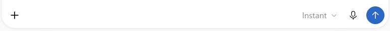
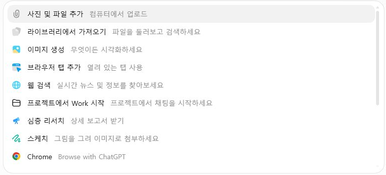

실제 조작 화면을 순서대로 연결했습니다. 아래 사진을 누르면 원본 크기로 열립니다.
실제 조작 화면을 순서대로 연결했습니다. 아래 사진을 누르면 원본 크기로 열립니다.Bravo AI Life 기본 사용법 · 1차시로 돌아가기
STEP 01
새 대화에서 첫 질문 보내기
입력창에서 글, 받아쓰기, 음성 대화를 구분해 봅니다.
실제 조작 화면을 순서대로 연결했습니다. 아래 사진을 누르면 원본 크기로 열립니다.빈 입력창 찾기
새 채팅에서 아래 입력창을 찾으세요. 왼쪽 ＋는 자료와 도구를 여는 버튼입니다. 오른쪽의 마이크는 말한 내용을 글로 바꿉니다. 파형 버튼은 음성 대화를 시작합니다.
보낼 때는 위쪽 화살표
글이 들어가면 오른쪽 끝이 보내기 화살표로 바뀝니다. 자료와 요청을 확인하고 누르세요. 원하는 답의 모양도 같은 입력창에 적습니다.

질문에 맞는 도구 고르기
파일을 분석하려면 사진 및 파일 추가, 새 그림을 받으려면 이미지 생성, 최근 사실에 근거가 필요하면 웹 검색을 고릅니다. 라이브러리에서 가져오기는 저장된 자료를 다시 쓰는 항목입니다. 브라우저 탭 추가는 선택한 페이지를 자료로 쓸 때 이용합니다. 메뉴는 계정과 시기에 따라 다릅니다.
